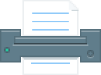

О проекте
Сайт предлагает современному учителю удобный инструмент для организаци
рабочего процесса, который поможет съэкономить время. Персонаж сайта —
робот Тестоник, помощник учителя, отображен в знаке логотипа, а также
присутствует в интерфейсе
База готовых заданий и комплектов
Загрузка комплектов в удобных форматах
Инструмент для управления коллекцией материалов

Печать комплектов к занятию
Создание комплекта
Пользователи сервиса могут создавать комплекты из собственных заданий
или заданий из базы сервиса
Фильтр поиска заданий раскрывается и позволяет искать задания по конкретному
предмету, а также школьной программе: классу, разделу и теме
Активность
«Карточки»
Активность позволяет изучить комплект в любой последовательности и
направлении. Каждое задание представлено в виде карточки, перевернув
которую можно подсмотреть ответ
При первом знакомстве с активностью на странице присутствует помощник
Активность
«На время»
Прохождение комплекта в виде игры. У робота (игрока) есть 3 жизни — 3
возможности ответить на задание неправильно или не успеть с ответом.
С каждым следующим заданием время на ответ сокращается
(отображается в виде уменьшающегося заряда батарейки сверху).
Цель игры — ответить на наибольшее количество вопросов
Когда игрок даёт неправильный ответ или не успевает ответить, робот умирает.
Игроку предлагается исправить ошибку и продолжить игру
Перед началом игрока встречает небольшое пояснение и текущий
рекорд. После — результат и рекоды других участников
Активность
«Тестирование»
Прохождение комплекта в виде теста с возможностью анализа результатов
по завершении. Задача — набрать как можно больше количество баллов.
Перед тестом форма сообщает ученику о его предыдущих успехах
Результат прохождения теста с анализом ответов на каждое задание

Активность
«Пары»
Необходимо сопоставить пары вопрос-ответ. Пары генерируются из заданий,
входящих в комплект
После игры можно узнать свой результат. Перед началом можно ознакомиться
со своим текущим рекордом